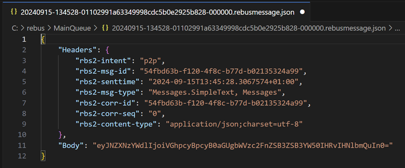

In this article we are going to show how to run a Rebus service bus inside of .Net Worker.
Introduction to Rebus #
Rebus is an open-source, distributed, asynchronous and durable .Net Service Bus that is both very a powerful way to build applications and microservices, and it is a real pleasure to develop with. It is similar to other .Net Service Buses such as NServiceBus, Mass Transit or EasyNetQ.
Rebus has a focus on simplicity and is very easy to embed into any part of your application (with the possible exception of mobile apps and embedded). If you are not already familiar, here are some links to help you get started:
- A description from Rebus' main website
- The main documentation wiki on GitHub
- The main repository on GitHub
You might also find my previous article useful, Long-running business processes in C# with Rebus on Azure. There is an equivalent article using F# here.
Introduction to .Net worker services #
.Net Workers are a way to host a background service in .Net. Typically, you would use them for building long-running processes like Windows Services or a Linux deamons. You can also run .Net workers in console apps, desktop apps, and ASP.Net background tasks. Here are some links for further reading:
- The main Microsoft documentation
- Microsoft documentation about ASP.Net background tasks
- A blog from Scott Hanselman talking about Windows services and Linux deamons
- A video introduction from Mohamad Dbouk
Source code #
The source code for this article can be found in GitHub here:
https://github.com/seankearon/RebusBackgroundService
Creating the solution #
# Create the solution folder
mkdir RebusBackgroundService
cd RebusBackgroundService
# Create the solution
dotnet new solution --name RebusBackgroundService
# Create the worker project and add it to the solution
dotnet new worker --name RebusWorkerService
dotnet sln RebusBackgroundService.sln add ./RebusWorkerService/RebusWorkerService.csprojAt this point you will have a basic .Net Worker. Inside Program.cs you will see that it constructs a host and registers a worker service:
using RebusWorkerService;
var builder = Host.CreateApplicationBuilder(args);
builder.Services.AddHostedService<Worker>();
var host = builder.Build();
host.Run();There is a Worker class derived from BackgroundService that is registered into the host and which writes to the log every second.
namespace RebusWorkerService;
public class Worker : BackgroundService
{
private readonly ILogger<Worker> _logger;
public Worker(ILogger<Worker> logger)
{
_logger = logger;
}
protected override async Task ExecuteAsync(CancellationToken stoppingToken)
{
while (!stoppingToken.IsCancellationRequested)
{
if (_logger.IsEnabled(LogLevel.Information))
{
_logger.LogInformation("Worker running at: {time}", DateTimeOffset.Now);
}
await Task.Delay(1000, stoppingToken);
}
}
}You can run the project now, and it starts as a console app. As the default logger is the console, you will see output similar to this:
So, for our setup we need to include a couple more projects:
- A simple console that we can use to test our Rebus service.
- A shared library to hold our Rebus message types.
To do that, run the following from the solution folder:
# Create the shared message types project and add it to the solution
dotnet new classlib --name Messages
dotnet sln RebusBackgroundService.sln add ./Messages/Messages.csproj
# Create the CLI project and add it to the solution
dotnet new console --name Cli
dotnet sln RebusBackgroundService.sln add ./Cli/Cli.csprojAfter that, your solution should look like this:
Setting up the Rebus bus #
We're focusing on hosting Rebus in a .Net Worker, so we're going to keep our Rebus implementation nice and simple. We're going to:
- Process a message that just has some simple text for content.
- When the message is processed by Rebus, it will just write the message's text to the console.
To make it easy to see the messages as they are processed by Rebus, we are going to:
- Use the file system as the transport mechanism for our messages.
- Use an audit queue so that we can easily inspect the processed messages.
(If you want to go deeper into setting up Rebus, try this article.)
So, let's get this set up so we can see Rebus doing something in our Worker Service!
Define the message type #
First, we define our simple message class that will carry the text content.
Remove Class1.cs from the Messages project, add a new C# file named SimpleText.cs with the following content:
namespace Messages;
public class SimpleText
{
public string Message { get; set; }
}Define the Rebus bus #
The plan here is to create a class to hole our Rebus IBus instance and have a single instance of this running inside our BackgroundService.
Add a reference to Rebus' ServiceProvider package #
We will add a reference to the Rebus NuGet package to our Worker Service project. To do that, run the following from the folder of the RebusWorkerService project:
dotnet add package Rebus.ServiceProvider
This brings in everything we need from rebus for this simple example. For production instances you likely will use other components such as Rebus' Azure ServiceBus etc.
Create a Rebus bus in our Worker Service #
We are going to create and run an instance of Rebus IBus directly inside our Worker service. This follows the approach suggested by Mogens here.
To do that, we first create an IServiceCollection instance in our Worker service:
private readonly IServiceCollection _services = new ServiceCollection();Then, we use the helpers from the Rebus.ServiceProvider to do our Rebus configuration, which we will do directly inside the Worker service's constructor:
public Worker()
{
_services.AddLogging(logging => logging.AddConsole());
_services.AddRebus(
rebus => rebus
.Logging (l => l.Console())
.Transport(t => t.UseFileSystem("c:/rebus", "MainQueue"))
.Options (t => t.RetryStrategy(errorQueueName: "ErrorQueue"))
.Options (t => t.EnableMessageAuditing(auditQueue: "AuditQueue"))
);
_services.AutoRegisterHandlersFromAssemblyOf<Worker>();
}To keep things simple, we hard code the file system location we want Rebus' FileSystemTransport to use when processing messages. We route failed messages to an error queue, and we also add message auditing just so that we can see all the messages we process when running this small example. (You would probably not have auditing turned on production.)
The last thing we need to do is to create and start a Rebus IBus instance like so:
await using var provider = _services.BuildServiceProvider();
provider.StartRebus();Putting that all together makes our Worker class look like this:
using Rebus.Auditing.Messages;
using Rebus.Config;
using Rebus.Retry.Simple;
using Rebus.Transport.FileSystem;
namespace RebusWorkerService;
public class Worker : BackgroundService
{
private readonly IServiceCollection _services = new ServiceCollection();
public Worker()
{
_services.AddLogging(logging => logging.AddConsole());
_services.AddRebus(
rebus => rebus
.Logging (l => l.Console())
.Transport(t => t.UseFileSystem("c:/rebus", "MainQueue"))
.Options (t => t.RetryStrategy(errorQueueName: "ErrorQueue"))
.Options (t => t.EnableMessageAuditing(auditQueue: "AuditQueue"))
);
_services.AutoRegisterHandlersFromAssemblyOf<Worker>();
}
protected override async Task ExecuteAsync(CancellationToken stoppingToken)
{
await using var provider = _services.BuildServiceProvider();
provider.StartRebus();
while (!stoppingToken.IsCancellationRequested)
{
await Task.Delay(TimeSpan.FromSeconds(1), stoppingToken);
}
}
}Handle the messages #
To give Rebus something to do, let's add a simple handler for our SimpleText messages. The handler will just create a short delay, then log the message contents to the console.
Add a file named SimpleTextHandler.cs to the RebusServiceWorker project. The contents of which will be:
using Messages;
using Rebus.Handlers;
namespace RebusWorkerService;
public class SimpleTextHandler: IHandleMessages<SimpleText>
{
public async Task Handle(SimpleText m)
{
await Task.Delay(10000); // Pretend we're doing some work!
Console.WriteLine(m.Message);
}
}Remember that we already told Rebus to find and register all handlers from this project using the following line:
public Worker()
{
...snip...
_services.AutoRegisterHandlersFromAssemblyOf<Worker>();
}So, we now have a working bus - job done!
Build the CLI to send our messages #
Now, we just need a way to send messages to Rebus. Let's update the Cli project we added earlier to build a quick and dirty console app to send our messages.
Let's add the Rebus.ServiceProvider NuGet package to the project by running the following from the folder of the Cli project:
dotnet add package Rebus.ServiceProvider
Add the following code to the Program.cs file@
using Messages;
using Microsoft.Extensions.DependencyInjection;
using Rebus.Bus;
using Rebus.Config;
using Rebus.Retry.Simple;
using Rebus.Routing.TypeBased;
using Rebus.Transport.FileSystem;
var services = new ServiceCollection();
services.AddRebus(
rebus => rebus
.Logging (l => l.Console())
.Routing(r => r.TypeBased().Map<SimpleText>("MainQueue"))
.Transport(t => t.UseFileSystemAsOneWayClient("c:/rebus"))
.Options (t => t.RetryStrategy(errorQueueName: "ErrorQueue"))
);
var provider = services.BuildServiceProvider();
provider.StartRebus();
var bus = provider.GetRequiredService<IBus>();
Console.WriteLine("Enter the message text (type 'Q' to quit):");
while (true)
{
var input = Console.ReadLine();
if (input?.ToUpper() == "Q")
{
break;
}
bus.Send(new SimpleText{Message = input});
}
Console.WriteLine("Goodbye!");
Send messages to Rebus #
Now we can run the Cli project, type a message, and press Enter to send the message to our Rebus message queue. As we're using the FileSystemTransport, that will result in a file being saved into the MainQueue folder which corresponds to the name of our queue.
The following line in our configuration was responsible for the routing:
.Routing(r => r.TypeBased().Map<SimpleText>("MainQueue"))If you look into the message, you'll see the metadata that Rebus has wrapped around the message sent by our code.

Our message content has been encoded into Body:
Process messages in our Worker Service #
Start the RebusWorkerService project and the message will be picked up and processed by our background worker, resulting in the message text being written to the console output.
I had entered "This is the message we want to send" when I created the message in the CLI, which we can see below:
As expected, Rebus has removed the message it processed, and we can see the audit queue contains what we have processed.